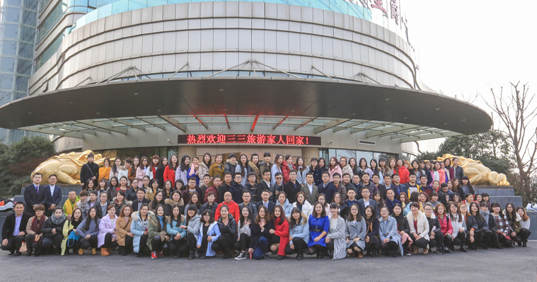

苏州三三国际旅行社有限公司简称三三旅游（注册资金1000万），前身是苏州青旅地接中心。三三旅游品牌创立于2008年，经过多年发展，成为苏州旅游直营连锁第一品牌，苏州全市拥有18家直营门店，每年有1500家企业和10万个人选择三三旅游。
三三旅游是一家深耕苏州的本土企业，一直专注于研发苏州自组团（苏州收客、苏州成团、全程管控、一管到底）。业务涵盖国内游、东南亚、欧美澳、中东非等苏州自组团；签证、酒店、机票、机场接送等单项服务。
2016年，三三旅游提出了品牌新理念：三三旅游 服务到家（家离店不远、家门口接送、家人式服务），进一步提升了服务水准，为大众带来便捷、舒适、无忧的旅行体验。

2016年全体员工合影